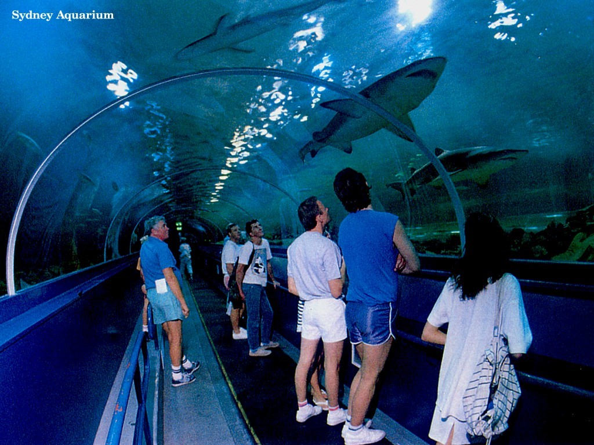
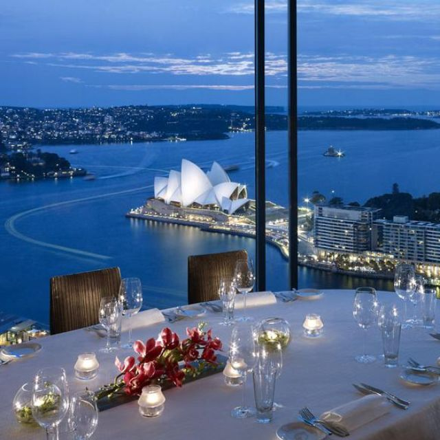
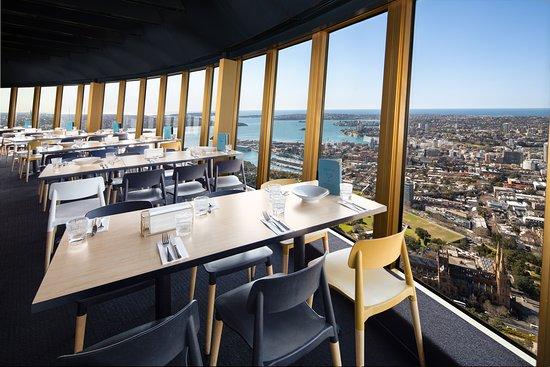

SYDNEY
Historia
Ciudad en Australia Sídney, capital de Nueva Gales del Sur y una de las ciudades más grandes de Australia, es famosa por su Casa de la Ópera de Sídney junto al puerto, con un característico diseño con forma de velas. El enorme Puerto Darling y el puerto Circular Quay más pequeño son núcleos de la vida ribereña, con el arqueado puente de la bahía de Sídney y el reconocido Real Jardín Botánico que se encuentra cerca. La plataforma exterior de la Sydney Tower, el Skywalk, ofrece vistas en 360 grados de la ciudad y los suburbios. El Acuario de Sídney, el Zoológico Taronga y el Zoológico Wild Life Sydney albergan animales, como koalas, canguros, tiburones y serpientes. El mercado de pescado de Sídney en Pyrmont tiene una subasta activa de productos marinos y restaurantes que sirven las capturas del día. Hay opciones culinarias multiculturales en toda la ciudad, incluido el barrio chino de Haymarket y los restaurantes que atienden a la comunidad italiana de Leichhardt. Un paseo en transbordador por la bahía es parte de la experiencia de visitar destinos fuera de Sídney, como las playas Bondi y Manly, ambas populares para el surf
Sitios que visitariamos
Acuario de sydney
Zoológico Wild Life

Zoológico Taronga

Restaurantes
Altitude
176 Cumberland St, Sydney NSW 2000, Australia
Quay
Upper Overseas Passenger Terminal, The Rocks NSW 2000, Australia

Tower
188 Pitt St, Sydney NSW 2000, Australia
Itinerario
- Día 1:
A la hora prevista, salida en vuelo internacional con destino a Sydney. Noche a bordo. - Día 2:
Llegada al aeropuerto de Sydney y traslado al hotel. Resto del día libre. Alojamiento. - Día 3: Acuario de sydney
Desayuno. Por la mañana visita de la ciudad, recorriendo sus principales avenidas y en la tarde visitan el acuario de sydney, luego se hará un recorrido por parques, Darling Harbour, Barrio Chino. Tiempo libre. Alojamiento. - Día 4: Zoológico Wild life - Northern Beaches
Desayuno y salida hacia el zoológico, Visitar las Northern Beaches, Visitar el Puente del puerto de Sídney y las diferentes calles de sydney. Alojamiento. - Día 5: Desayuno y salida hacia Zoológico Taronga, y visitar la Ópera de Sídney. Alojamiento.
- Día 2: Barcelona – Camp Nou – Park Wüell
Llegada al aeropuerto de Barcelona y traslado al hotel. Resto del día libre. Alojamiento. - Día 3: Barcelona
Desayuno. Por la mañana visita de la ciudad, recorriendo sus principales avenidas como la Plaza de Cataluña, el Paseo de Gracia, la Diagonal, la Sagrada Familia de Gaudi, el barrio Gótico con la catedral, las Ramblas y finalmente el parque de Montjuic desde donde disfrutaremos de una bella panorámica de la ciudad y su puerto. Tiempo libre. Alojamiento. - Día 4: Barcelona - Zaragoza - Pamplona
Desayuno y salida hacia Zaragoza. Tiempo libre para visitar la Basílica de la Virgen del Pilar, patrona de la Hispanidad y continuación hacia Pamplona, capital del antiguo Reino de Navarra. Tiempo libre para conocer la ciudad. Sugerimos realizar visita opcional para dar un paseo por el famoso recorrido del encierro de San Fermín y degustar los típicos “pintxos". Alojamiento. - Día 5: Pamplona - San Sebastián - Bilbao Desayuno y salida hacia San Sebastián, la bella ciudad de corte francés, conocida por la Perla del Cantábrico, con su magnífica Playa de la Concha. Tiempo libre y continuación a Bilbao. Alojamiento.
Día 1:Ciudad de Origen - Barcelona (noche a borde)
Salida de tu ciudad de origen con destino Barcelona.